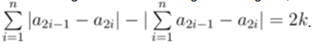

2023JLU_ACM招新面试
吉林大学2023年ACM招新面试于2024年3月9日进行，本次面试采用现场问答题目的形式，目的在于考察同学的解题思路，以下为真题和解析。（题目选择与Hint设计：kingsnow）
Codeforces 359B
题意
给定 $k$ 与 $n$ ，求一个长度为 $2n$ 的排列，满足：

保证 $(1 \leq n \leq 50000, 0 \leq 2k \leq n)$
Hint1
可以先构造特殊情况。
Hint2
可以尝试固定最左边这项的取值。
Hint3
可以利用等式右边是2k而不是k的性质。
解法
特殊情况，指的是 $k=0$时，此时取 $a_t=t$ 即可满足条件。
再考虑 $k\neq 0$的情况，我们发现当调换 $a_{2i-1}$和 $a_{2i}$且已调换次数较少时，等式左侧的左边一项不变、右边一项会少2。
所以进行$k$次交换，即可构造出题目所需的排列。
代码
1 |
|
Codeforces 1541B
题意
给定$a_1$~$a_n$ ,保证$a_1$~$a_n$ 两两不同，求pair(i,j)满足 $i<j$且$a_i*a_j=i+j$的对数。
保证$2≤n≤10^5,1≤ai≤2⋅n$
Hint1
等式右边的值范围不大。
Hint2
$\sum_{i=1}^n \frac1i =O(logn)$。
Hint3
可先枚举$i$后枚举$i+j$。
解法
先枚举$i$，得到$a_i$，那么$i+j$一定是$a_i$的倍数，又可知$i+j\leq 2n$，所以可以一个一个枚举完$i+j$并验证$a_j$是否符合条件，总复杂度$O(nlogn)$
代码
1 |
|
Codeforces 1455B
题意
你站在坐标轴上的0点，第i次操作你可以选择坐标+i或-1，求到坐标x（x>0）点的最小步数。共t次询问
保证$ 1≤t≤1000,1≤x≤10^6$
Hint1
当固定总步数后，可以先走大的再走小的。
Hint2
我们可以考虑先全+i，然后反悔
Hint3
特殊情况，全取+i时到达了x+1的情况要特殊处理。
解法
不断枚举步数，当全取+i时大于等于x了的时候停止。判特殊情况到达x+1，这种情况要加一步。其它情况将对应的步变成-1即可。
代码
1 |
|
Codeforces 1526B
题意
给x，求x能不能由11,111,1111，。。。，这些数相加得到（数可以重复使用）？共t次询问
保证$ 1≤t≤10000,1≤x≤10^9$
Hint1
有些数用不上。
Hint2
只有两个数能用上。
Hint3
大的数用上的次数是很少的，可以求出来。
解法
只有11和111能用上，而111用的次数不超过11次，所以可以直接枚举，或者取模都行。
代码
1 |
|
2023JLU_ACM招新面试
https://zhouyuheng2003.github.io/2024/03/09/2023JLU_ACM招新面试/
install_url to use ShareThis. Please set it in _config.yml.